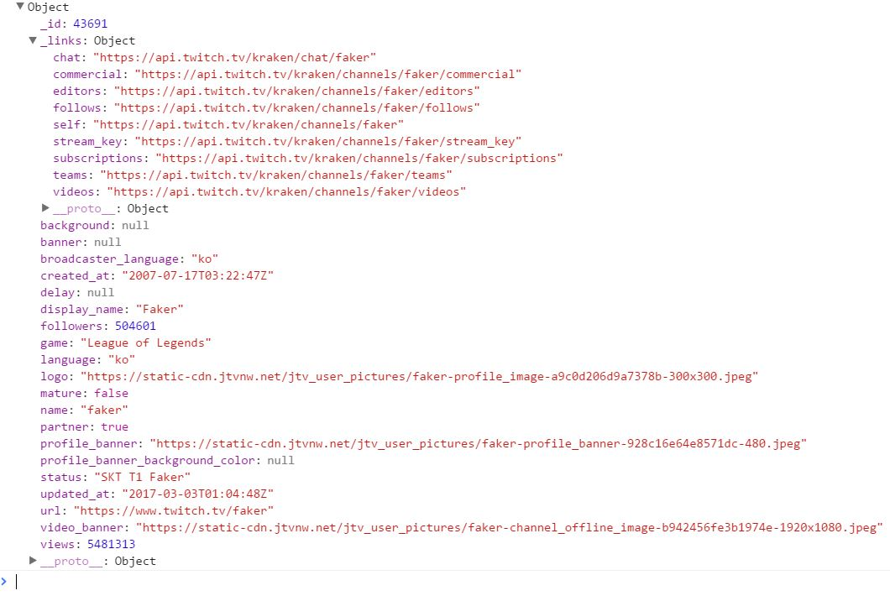

In the example code, the two lines
var response = JSON.parse(req.responseText);
console.log(response); are responsible for parsing the data returned from the server and logging the parsed JSON object data to the console.
If you look at the console after executing console.log(response), you will see a formatted JSON string containing all the information about Faker's stream.
If you look at the image above, all the information is in key value pairs. If I wanted to get the broadcaster's language in a variable I could write the following line of code.
var fakerLanguage = response.broadcaster_languageAccording to the JSON formatted response string, his language is "ko". If I wanted to see what game he is playing I could write,
response.gameand assign it to a variable. Previous Next